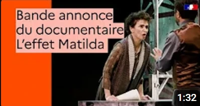
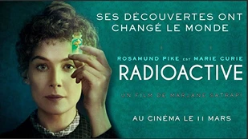

Sorti en 2025, "Les Fabuleuses ou l'effet Matilda" est un documentaire théâtral d'Elisabeth Bouchaud qui explore les mécanismes d'invisibilisation des femmes dans le monde scientifique, phénomène désigné sous le nom d'"effet Matilda". Cette œuvre hybride allie captations, pièces jouées et récits pour rendre hommage à trois grandes figures féminines oubliées : Rosalind Franklin, Lise Meitner et Jocelyn Bell. Chacune de ces savantes a contribué de manière décisive à des découvertes majeures, mais a vu sa reconnaissance éclipsée au profit de collègues masculins.

Le documentaire sappuie sur une mise en scène immersive et pédagogique qui mêle performances artistiques, archives historiques, interviews et analyses. L'histoire de Rosalind Franklin, par exemple, est présentée à travers la couverture du Radium (cristallographie des rayons X), du mystère IADN. Celle de Lise Meitner, prix Nobel exclue, engage une réflexion profonde sur le contexte de guerre, d'oeil et de discrimination quicìa sujet. Jocelyn Bell, à l'ors découverte des pulsars, incarne sur ses travaux cruciaux dans la découverte de la structure de l'ADN. Cette de Lise Meitner, prix Nobel exclue, engage une réflexion profonde sur le contexte de guerre, d'oeil et de discrimination quicìa sujet. Jocelyn Bell, à l'ors découverte des pulsars, incarne sur ses travaux cruciaux dans la découverte des pulsars.

Film sur trois mathématiciennes afro-américaines ayant contribué aux missions spatiales. Montre leur combat contre le racisme et le sexisme.

Biopic sur Marie Curie, ses découvertes au rayonnement de l'infirmement et ses contributions révolutionnaires à la science.

Documentaire mettant en lumière les contributions scientifiques des femmes dont les travaux ont été appropriés par d'autres, complète l'enquête avec la découverte des pulsars.

Documentaire théâtral de Elisabeth Bouchaud qui explore les mécanismes d'invisibilisation des femmes dans la science, avec exemple historiques.